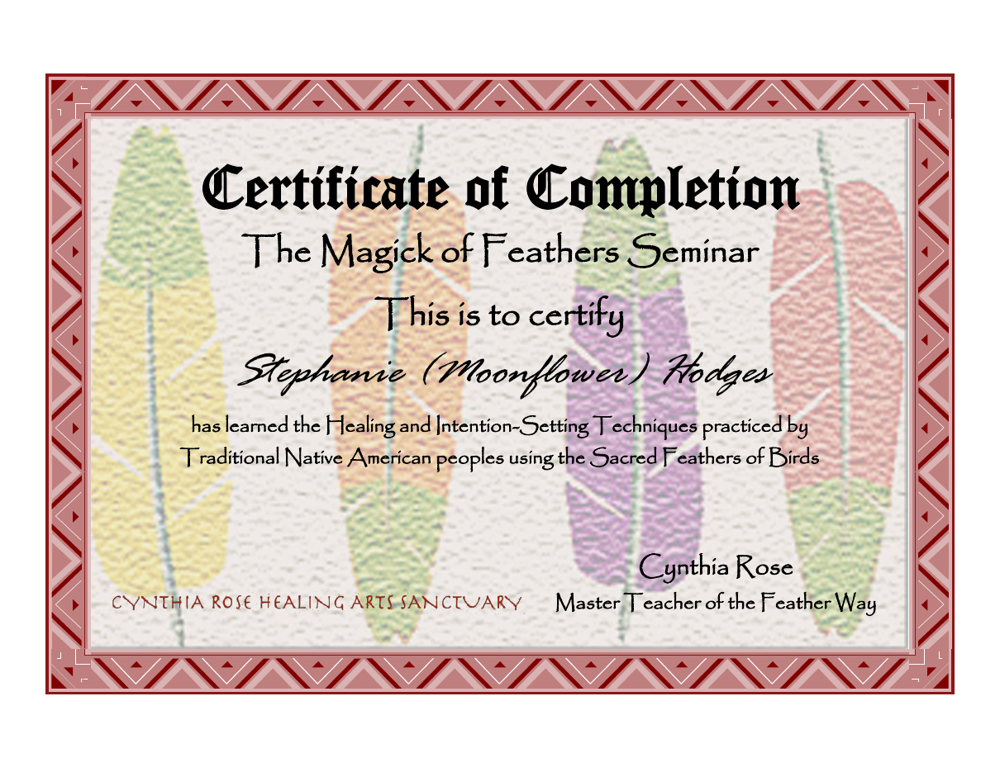
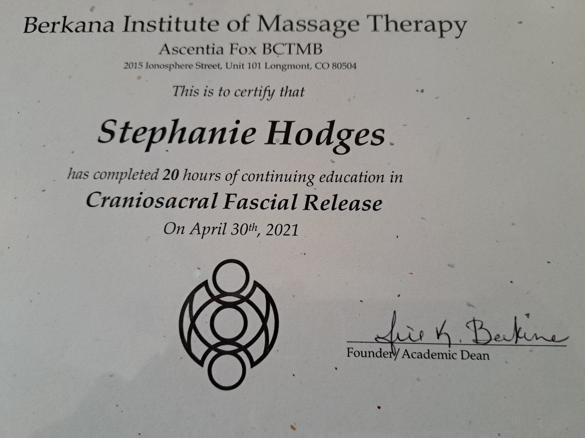

Feather Way healing, sacrocranial massage, sound, and energy work — quiet, attentive sessions rooted in training, tradition, and years of hands-on practice.
Healing and intention-setting work with sacred feathers, in the tradition taught by Cynthia Rose of Cynthia Rose Healing Arts Sanctuary. Feather fans and gentle clearing work for reflection, release, and renewal.
Craniosacral fascial release — a light-touch, deeply relaxing bodywork practice working with the head, spine, and fascia. Trained at the Berkana Institute of Massage Therapy, Longmont, Colorado.
Tuning-fork practice and resonant sound to shape a calm, unhurried space for rest and reflection.
Attentive energy work and aura sculpting — shaping the feel of a space and a session with intention, breath, and stillness.


(720) 436-3306 · mnflwr69@gmail.com · Denver, Colorado
Stephanie "Moonflower" Hodges · Denver, Colorado